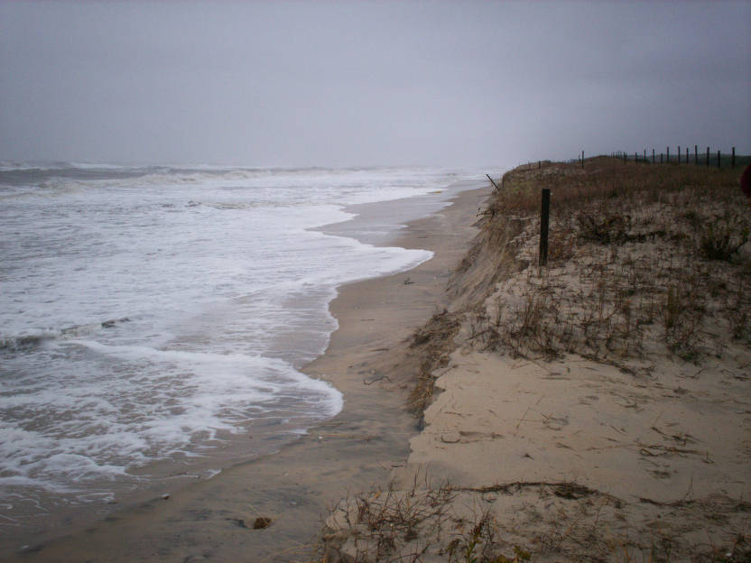

You decided that the populated beach was the bigger threat, but the rising sea levels engulfed your nest and feeding grounds, leaving you homeless.

Today, rising sea levels are a major threat to many marine creatures, and it is one of the leading threats towards the Piping
Plover. Because the Piping Plover nests near water, this makes them esepcially vulnerable to the smallest changes in sea levels.
This problem leads to habitat loss, increased nest abandonment, and bird mortality.
Luckily, in this scenario, you have the ability to go back and continue on your migration path.
To learn more about how to prevent this from happening, click the button below.: